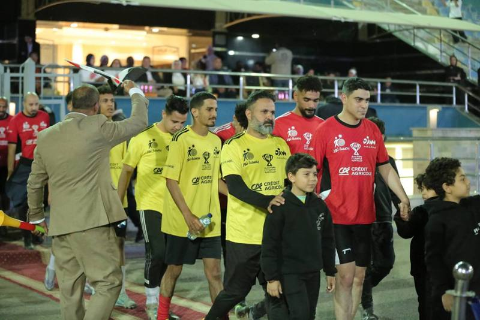
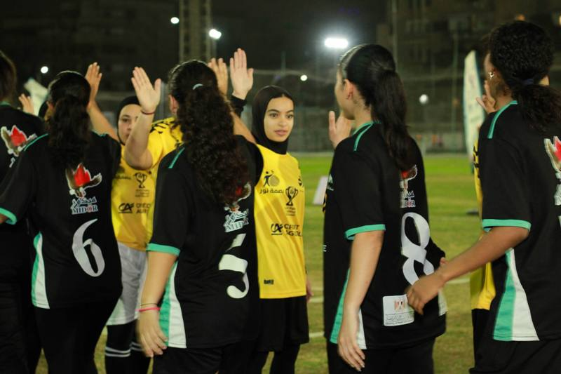
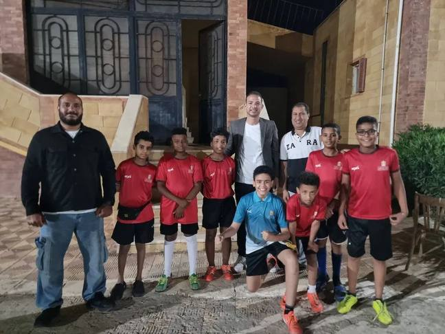
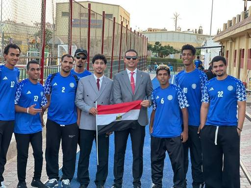
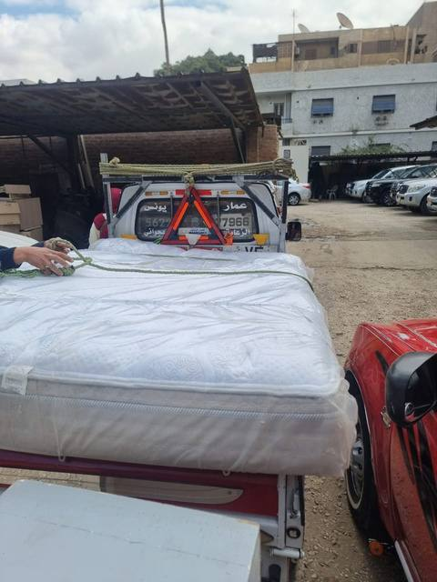
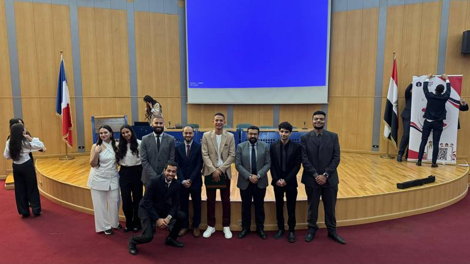
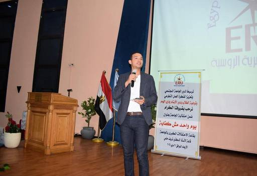
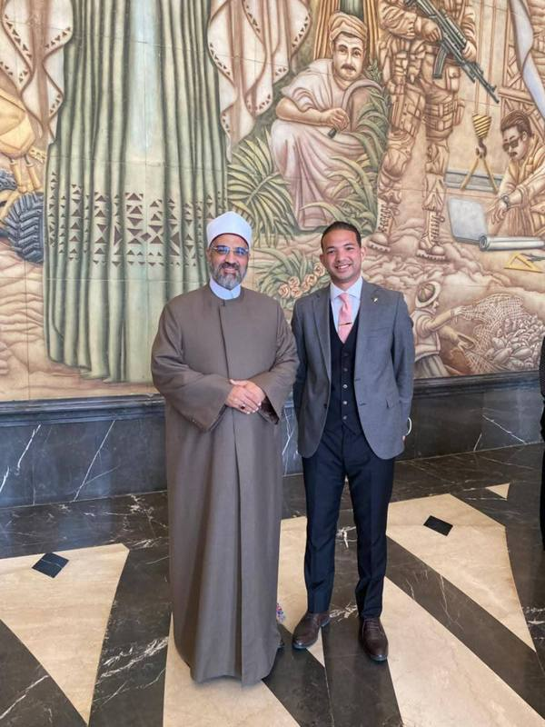

From the pitch to the decision-making room: what we have done with care-home youth and their families, in news and photos.
Basmat Nour numbers from before and after the official founding, a few examples among many
We ran the tournament with 282 players from 23 care homes, with opening and closing ceremonies, and provided kits and sports prizes for all participants. The tournament aims to discover talent and open paths to training and work.
We helped organize the camp at the official invitation of the Ministry of Youth and Sports. It targeted 400 orphaned children from 27 governorates, to discover and support talented ones.
The association's team won third place.







Preparing, transporting and distributing 150 hot meals a day for 29 days in Ramadan, and distributing Ramadan food bags to support care leavers and their families in Maadi, Badr, 15 May, El Salam and Obour. The campaign was carried out with the Mersal Foundation.
Distributing 160 pieces of furniture to 400 beneficiaries.
A full medical caravan across several specialties, coordinated with the Ibrahim Ahmed Badran Foundation, serving 120 beneficiaries.




More than 150 job opportunities for young people from care homes.
With the French University in Egypt, we ran Soft Skills and ICDL courses for 25 care-home youth in April and May, to prepare them for leaving care. Specialist professors from the university taught them, and 20 passed and received graduation certificates. We also provided 20 training scholarships.
35 official invitations for the association to join the Start Summit at the Egyptian Museum, for training and job opportunities.



Launching the observatory to correct the image of orphans in drama, and tracking more than 160 television, digital and print media features.
Awareness campaigns and sports days in 3 schools and 7 universities, including the American, Canadian, Russian and French universities, to show successful role models and reduce the stigma that follows care-home youth.
A partnership with Dialogue in the Dark for awareness trips serving 180 beneficiaries.
Association members took part in a documentary episode of the series Awlad El-Shams to show real, positive role models. With the Canadian University, students completed a graduation project: a documentary showing the real picture of care homes after the series.
An awareness day and a workshop on care-home visiting etiquette for the company's staff, attended by its chairman, the head of the Egyptian General Petroleum Authority and the CSR manager.
Joining the Hona El-Tadamon podcast, plus press, television and digital coverage.





Accepting an official invitation inside the Egyptian House of Representatives to represent young orphans, and meeting leaders of the Ministries of Social Solidarity and of Youth and Sports to carry the youth experience to decision makers.
Joining the Samusiel Foundation seminar with the European Union on surrogate mothers at risk of street life.





30 volunteers took part in running field activities and initiatives.
Taking part in the volunteer day organized by Midor Petroleum at Dar Al-Sandas for orphans.
Finishing and equipping the administrative office, with the records and tools needed for an institutional workplace that can run and grow projects efficiently.

For partnership, sponsorship or volunteering, write to basmatnour.org@gmail.com